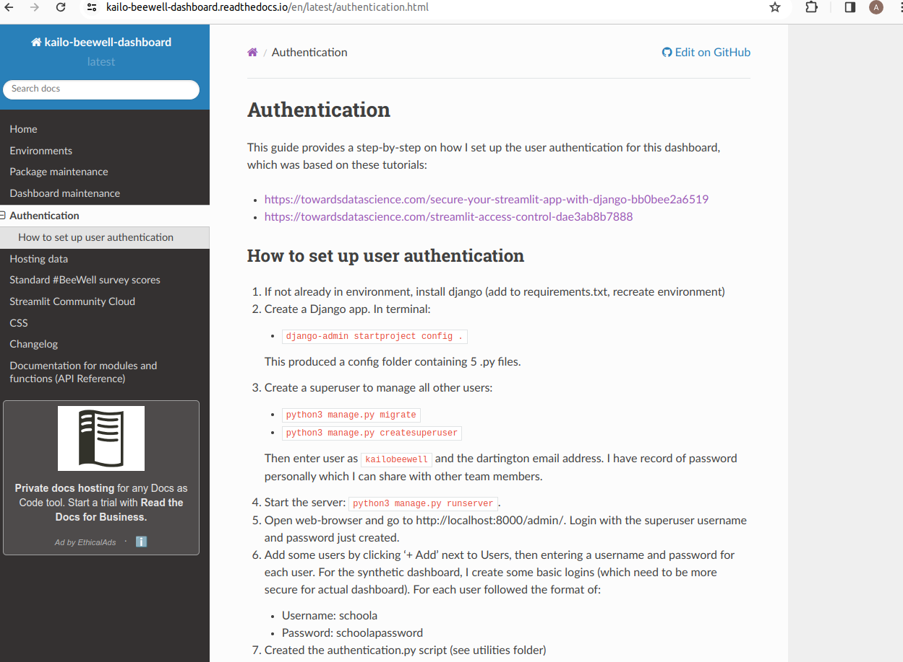

Streamlit and Python Packages#
This page shares an example of work where I have used Python packages and Streamlit.
⭐ Relevance to STARS: STARS WP1 includes restructuring steps into reproducible software package. May also wish to use streamlit if want web app that can be used to work with model.
Context#
Delivering a wellbeing survey with secondary school pupils at nine schools across North Devon and Torridge. There are two survey types:
Standard survey for mainstream schools
Symbol survey for special schools
We do not yet have results, but I have prepared dashboards using synthetic data. The purpose of these dashboards is:
To share a schools results back with them (with standard and symbol survey dashboards, specific to each school)
Public dashboards to share results across Northern Devon (e.g. Public Health team, community partners on Kailo)
The dashboards are produced in Python using streamlit.
Package#
Due to overlap between dashboards, create a package for reuse of code.



Example: School dashboard (standard survey)#

Features include:
User authentication
Importing data hosted within TIDB cloud
Generation of a static PDF report
Hosted on Streamlit Community Cloud
Example 2: Northern Devon dashboard#